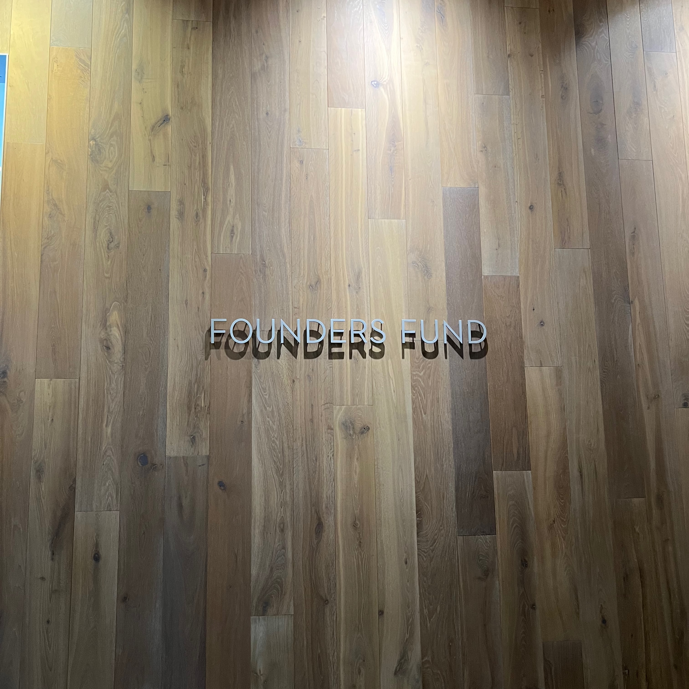

FR8 Year One: Chaos & Conviction
None of this was supposed to work, but here we are. I’m writing this to look back at FR8’s first year, to remember what’s happened, to appreciate the people who made it possible, and to show how we actually pulled it off. Maybe it’ll hit the right person at the right moment, and they’ll finally decide to go all in.
This is written from my perspective, but the ethos is “we.” Everything that’s happened so far is thanks to our team, volunteers, cohort members, sponsors, advisors, and the people who have believed in us first.
0
The most wonderful thing to witness is when something that starts as a vague idea in your head turns into concrete change in the world around you. This is how the world works. It's a sandbox where you can shape things.FR8 was also just a vague idea in the beginning. I divide the birth of the idea into three different areas.
One was a local problem we wanted to solve. After working in the Finnish startup scene, it was clear that the best technical students in Finland and Europe were not interested in startups or building something of their own. All the trillion dollar tech companies have had a founding CEO with a technical background, with Jobs being the only one to argue about. It was clear to us that if we want companies like Google and OpenAI coming out of Europe, this has to change.
Another one was pure inspiration. I’d been to Silicon Valley a few times before, absorbed the energy there, and brought it back home. FR8 was most inspired by HF0 and Prod. We visited HF0 and I met one founder who had gone through Prod, and later I got in touch with their co-founders. We have not copied them 1:1, but we have taken a lot of inspiration from both of those programs. People from both have been generous in helping us understand what has worked for them and what has not. I appreciate this a lot.
The main reason, which FR8 really is all about, is that we wanted to create a place where people can purely go all in on their craziest ideas. Society, may it be universities, friends, or family, does not embrace risk-taking and working on something completely new with full freedom. Back then I was thinking about asteroid mining, and I felt that there was no place in the world where I’d belong. You cannot really study it anywhere, it's rare to find investors ready to back something like that instead of the next hottest B2B SaaS, and it's even rarer to find people on the same wavelength, facing similar challenges, working on something so novel that normal people look at you like you belong in a mental asylum. We wanted to create a place where these people can feel at home and help accelerate their missions as much as possible.
Personally, I felt that if I didn’t have to worry about rent or food, and had internet, that would be enough to get started. That is where the residency model came in and now we have basically hacked free living for ourselves, which makes it possible to focus on what truly matters.
Early Signs of Momentum
In fall 2024, I was still on the Aaltoes board and tinkering with the idea that became FR8. But back then, it was mostly just talk. We had started a few sponsor conversations and were looking for a building. The momentum was slowly building up through small wins.The first real win was when I met a few people from the City of Espoo. I told them we were looking for a mansion, and instead of laughing, they got excited. They started figuring out if the city had any buildings that could work for the program.
Around the same time, I had a meeting with Ilkka Kivimäki from Maki.vc, a Nordic startup ecosystem OG. I was trying to figure out how to fund the program. The plan was to raise 300k for two years. Another one of our early advisors, Moaffak Ahmed, told me to multiply the initial budget by π. In our case, it turned out to be τ times two. He was right, the 300k ended up being enough for just one cohort. Miki Kuusi (CEO of Wolt) recommended that we start with an MVP. Nantte replied that this was the MVP.
After sparring with Kivimäki, he said they’d help us with a small sponsorship ticket. Then I talked with Timo Ahopelto from Lifeline Ventures, and they decided to match it. That’s when we got our first real momentum: two top Finnish investors backing the conviction and the City of Espoo helping us find a space.
After that, it was easier to get others on board. Aalto University, Espoo, YYS, Ilkka Paananen (Supercell CEO) and Sitra joined. Still, by December 2024, our bank account showed 0€. Our first cohort was supposed to start on January 17, 2025. A small tip for anyone fundraising: the time between hearing “yes” and actually seeing money hit your account is way longer than you think.
During the fall, we also went to San Francisco to stay at The Residency, where Nick Linck hosted us. It was another spark of inspiration, seeing young people living together in a hacker house, building their own startups and projects.
From Mansion to Hotel
Originally, we were supposed to run the program in an old mansion. Espoo gave us a green light, but by December, it became clear that it wouldn’t work. Too many rules, no sleeping allowed, way too historical.We even told participants in an acceptance letter that we had this mansion and we might need to do some extra arrangements and we also have a huge hotel in mind that could work out. Later, some of them admitted they were 95% sure FR8 was a scam. Honestly, I don’t blame them.
We had to figure out a new place. Around December 24th, we started calling people in panic. No one answered. That’s when I realized it was Christmas. The holidays lasted until January 7th, and we were losing time fast. We had previously heard from the former mayor about an empty hotel on Aalto University’s campus. At first, we didn’t take it seriously. It didn’t have the “mansion vibe.” But by January, it was clear: it was our only option. It also ended up being perfect for us.
When people finally returned to work, we called everyone we knew. Within two days, one week before the cohort was supposed to start, we got confirmation that we could start the program in the hotel. Huge credit to the City of Espoo for that. They took a risk to support young people doing something new.
We got the keys four days before the participants landed. The hotel was empty. We had 20,000€ to furnish a completely empty 4,000m² building and make it livable. Anette found out a hotel in Jyväskylä was selling beds. Five minutes later, we were in a car driving three hours north to test them. We said on-site "These are great, we'll take 100".
I still don’t know how we did it. But we did. Anette, who had joined as Head of Operations just a week earlier, figured out furniture, food, laundry, cleaning, everything. Volunteers showed up and helped us to make the impossible happen. The whole hotel was furnished in four days.
When participants finally arrived, the place had just enough order to function, though one of them said it felt like Lord of the Flies. Fair.
Assembling the First Cohort
By November, we had around 20 applications. It didn’t look good. We were thinking about how to tell sponsors that the vision they bought into wasn’t working.We went to YC’s startup school in London to promote FR8 to 1000+ young technical builders. While Paul Graham was speaking on stage, I wasn’t even listening. I was in the audience writing the FR8 manifesto, rushing to launch the website before we’d set up our roll-up inside YC’s event. Yes, the security guards came to take down our roll-up and then kept an eye on us for the rest of the event.
We had a cool idea but zero traction. Then, in December, everything changed. I wrote our first post about FR8 on LinkedIn at 1am in LA. Went to sleep. Woke up to hundreds of notifications. It had gone viral.
Applications started flooding in, hundreds of them. People from Stanford, Berkeley, Harvard, MIT, ETH. We couldn’t believe it. When we asked why they applied, most said the same thing: the manifesto spoke to them. They were tired of everyone playing it safe and wanted to go all in.
So yes, people from the Bay Area applied to a random, unproven program in a creepy Finnish mansion during the cold and dark winter.
In two weeks, we had to interview hundreds of people. Me and Nantte did all of them back to back. We had no clue what we were doing, but maybe that was part of the charm. We were authentic, and people felt it. Nobody likes fake confidence. Everyone’s figuring things out anyway.
Somehow, we managed to seem smart enough and like we had our sh*t together. We ended up accepting fifteen amazing people from eight different countries into the first cohort. To give an idea of the talent density: there were people who started coding at five and came to FR8 at seventeen to build their own programming language. People who had already worked at Microsoft, NASA, Apple, and an OpenAI-backed startup before turning eighteen. The imposter syndrome was real. These were some of the smartest and most interesting people I’d ever met up to that point.
Cohort 0.5
January 17th, 2025. Cohort 0.5 officially started. Rooms were ready, food was cooking, the sauna was warm.We didn’t want to run a strict program. The idea was freedom. People worked on what they loved and were interested in. Fridays were for demos, though at first, we got feedback that we were forcing “grindset culture”and goal setting too much. Learning for us, but by the end, most hit or exceeded the crazy goals they set for themselves at the beginning.
A normal day at FR8 looks boring. Everyone’s working. But between the grind, you share lunch, talk about neural networks, fix bugs together, go to the gym, sauna, or grab a beer. It’s the mix of deep work and human connection that makes the residency model work. We ended up creating lifelong friendships.
We also joined the demos ourselves. We’re building FR8 like a startup. We’re in the trenches too. Some weeks were great. Some were failures.
The cohort is full of fun memories and hectic moments, but not everything is meant to be shared. Those are things you could only see and experience if you were there. I want to thank every single Cohort 0.5 participant for, in a way, being among our first true believers, just like we were in them. They were willing to take a leap of faith and join something completely new and risky. You’ll definitely be hearing about them in the coming years.
The First Demo Day
April 8th, our first demo day. Four days before it, the pitches were horrible. Total chaos. We thought every investor would laugh us out of the room.Nantte went full beast mode. For four days straight, we grilled, practiced, refined, argued and repeated. It was pain. But it worked.
After the event, investors came up to us saying things like, “This was the best demo day I’ve seen in my 15 years in venture.” and “This was better than YC.” Everyone crushed it. It felt unreal. From zero to this, all of us standing there, proud, exhausted, but knowing we’d built something real.
Funding rounds weren’t huge, but some raised angels, others kept building. Around half continued working on their projects, others pivoted or joined new teams. What stuck with everyone was the talent density. People said they had never seen anything like it.
NPS
C 0.5 Honorable Mentions
We had investors from VCs like a16z and NEA visiting. Nvidia engineers came for dinner. Unicorn founders dropped by frequently. Nerf wars. We hosted the first-ever hacker hotel party. Snus independence was declared. Two newspaper articles. We went viral again. PG replied to our cold-email. We raised funding for the summer cohort. Everyone survived the sauna, also the whole Slush team. We got lost in a cave. Fire alarm in the middle of the night. It was chaos and magic.
Scaling Up
After the first demo day, we went straight to San Francisco for investor meetings and to interview applicants for the next cohort. I still remember walking into Founders Fund’s office for the first time, thrilling! Applications doubled, and doing all the interviews in SF was hectic, to say the very least. Here's a picture of what our days looked like.
This time we ended up accepting 33 people. Bigger scale, more chaos.
Preparing for 33 people meant using the full hotel. Again, the operations team and volunteers were in full hustle mode, setting up three times more rooms and the co-working space. We got free furniture and tech from companies like Koru Labs (Google), Aiven, Logitech, AOC and others. Over 200 Amazon packages arrived in June. We built a small hardware lab for 12 participants working on hardware. Bought the biggest consumer 3D printer and used it zero times.
We also built our own compute cluster behind the sauna. Huge thanks to Matias, Aatos, Neo, and Elliot for that. Elliot, who wrote a book on GPU programming in the first cohort, joined as part of the team to help participants with technical problems and AI-related questions.
These guys also set up a 10Gb internet for the entire building. Then came Tesla coils, the FR8 mobile, a homemade heated pool, talking coffee machines and doors opening with hand gestures. Every month, the hotel looked more and more like a real hacker hotel. Everything built by our team or the cohort members.
We’ve always had runway for only a couple of months, so funding was something we also had to figure out for the summer. It worked out, and we’ve now raised over €1M for FR8 itself in less than a year. Here's what a fundraising call looks like when you're running purely on stress.
Cohort 1.0
We called 1.0 our first full-sized cohort. We had 11 teams instead of two. More startups, more ambition, more sales, more MVPs built, more breakthroughs. Once again, people came from everywhere, Stanford, Berkeley, ETH, Oxford, high schools, SF, Nigeria, India. We had 15 different nationalities in the cohort. Some had built microprocessors from scratch at 16, some were Olympiad medalists, some were serial founders. Some even turned down YC to join FR8, that was our first early PMF feeling.We had people working on startups and projects like expressive robots, new types of microchips based on interaction nets, wearables, BCIs, room-temperature superconductor research, batteries, drones, cybersecurity, novel AI, and more.
It was madness. More whiteboards. More all-nighters. More demo sessions. More laughter and friendships. More everything.
Most of the startups have fundraised by now, and some raised in the millions after demo day, at 10–20M pre-seed valuations.
For the demo day, we pulled off something quite amazing. We were worried about getting investors to Finland, but over 50 VCs showed up. There were people from VCs like Index Ventures and General Catalyst, multiple unicorn founders and angel investors.
The pitches were absolutely amazing. Every single participant crushed it. We were genuinely so hyped. I was the only one who completely blacked out on stage but still somehow managed to handle it.
NPS
C 1.0 Honorable Mentions
The internal hackathons kickstarted by the participants. People like Emily (HF0), Teddy (Founder Embassy), Thomas (Hugging Face) and Laura (OpenAI) spending a night at FR8. The biggest mafia game so far. The sauna filled to the max and everyone singing ‘Siperian lakeus on suuri.’ Multiple founders dropping by, including Ilkka Paananen. Roy Lee giving a workshop on going viral. One participant having to leave one day before demo day because of visa issues, only to surprisingly make it back to pitch on stage. We met IShowSpeed. Redbulls consumed like never before. The energy during demo day. Another fire alarm in the middle of the night.


Raising Our Own Fund
We also raised our first fund in 2025. We hesitated at first, we didn’t want to become a VC. FR8’s soul is different. But when we asked advice from potential investors, it came together naturally. We designed it in a way that we can stay founder-first and flexible.The fund’s investors range from early backers of YC, SPC, HF0, and EF to successful founders and venture firms.
Long term, FR8’s vision is much bigger than what it is now. You can’t scale a non-profit to that level. Non-profits aren’t rewarded by results. This is our first step in figuring out how to build a sustainable and scalable model.
The fund is called Fuck Around & Find Out.
Taking a Breath
We were supposed to start the next cohort in late September. In August, we realized it didn’t make any sense. Three cohorts a year would make us focus automatically on quantity over quality. We would be stuck in an execution loop.Quality is what defines FR8, participants, operations, marketing, everything. We postponed to rethink, refocus, and plan bigger.
Right now, we’ve been off-grid, preparing for what’s next. Our next cohort kicks off early next year, and I can already feel that familiar pressure in my chest, the good kind. It’s the feeling that things are about to get even crazier from here. And trust me, they are.
This first year has been about building the MVP version of FR8, proving to ourselves that we can actually change the world around us. But most importantly, it’s been about bringing together young technical mavericks who are already building the future as we speak and helping them on their mission.
What FR8 Really Is
We’re not building a VC, an accelerator, or a university. FR8 is something new.The world is on fire. Democracy, individual rights and people’s lives are not guaranteed. The counterforce is progress. But progress can’t happen if the smartest people of this generation choose to play it safe, working in big tech, quantitative finance or consultancies.
We are changing that. Building a movement. Young technical mavericks going all in on their craziest ideas.
Our Goated Team
Nantte — our personal David Goggins. Works insane hours, handles finance, legal, fundraising, program and accountability. Keeps everyone grounded.Anette — the rockstar. She is the definition of "Get Sh*t Done". Brings light and energy to everything. She’s now focusing more on the bio side.
Caeden — the fearless high school dropout who started as the most proactive volunteer and joined full-time. Handled marketing and is now working on something legendary (TBA).
Matilda — chief of blueberry pie. Made operations smooth during the summer, made everyone feel at home, and is now off to SF for an internship to learn more.
Elliot — from playing Diablo with Elon Musk to joining C 0.5, and later the team as an admin. It’s hard to find people who work harder and faster than Elliot.
Eyrin — brought SF vibes, VC knowledge, and audacity to C 1.0. Always full of perspective and warmth.
Matias, Neo, Aatos, and Jesse, our tech crew — built the hotel internet, compute cluster, Tesla coils, and more. Matias went on to CERN to learn about particle accelerators, Neo turned the place into a hardware playground.
Ivar — An MVP behind the scenes who quietly made everything work. The operations couldn’t have been done without him.
Special thanks to our early contributors Ali, Jason, Doni, Matias, Taavi and Kaisa for helping us kick things off and get the ball rolling in the early days.
Thank you
And of course, massive gratitude to all our advisors, supporters, and sponsors of the first year. The City of Espoo, Maki.vc, Lifeline Ventures, Teknologiateollisuuden 100-vuotissäätiö, YYS, Illusian, Sitra, Nvidia, Anthropic, OpenAI, Runpod, Logitech, AOC, Data Crunch, and Elisa.6 Learnings from Year One
- Building something meaningful hurts. You wake up tired, anxious, and feeling like it’s all falling apart. But if you just keep moving, things start to fall into place.
- Unreal conviction + execution = interesting things start happening.
- Ask for money, you’ll get advice. Ask for advice, you’ll get money.
- Never lose momentum. It’s really hard to get back.
- If you’re not uncomfortable with the amount of risk you’re taking, you’re not going to make it.
- The world is a sandbox.
Ernesti Sario, Bückeburg, xx.10.2025